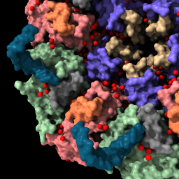
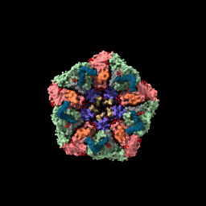
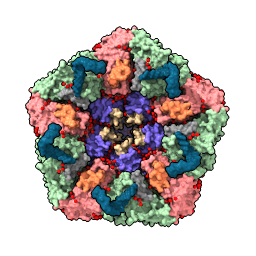

January 12, 2016
ChimeraX is the next-generation visualization program from the Computer Graphics Lab at UC San Francisco, following Midas, MidasPlus, and Chimera.
Compared to Chimera, ChimeraX has better graphics (e.g. interactive ambient shadows), handles large structures (millions of atoms) much faster, and has a modern single-window user interface (see short list of advantages). ChimeraX will have a web site of available extensions written by others using documented programming interfaces.
ChimeraX is not backward compatible with Chimera, although many aspects will be familiar from Chimera.
We plan an initial release with basic capabilities in March 2016, on Mac (10.10 or newer) and possibly Linux computers. A Windows release will be later in 2016.
Warning: ChimeraX is not yet released and the command syntax below is subject to change.
ChimeraX is currently mostly controlled by typed commands. Not all commands have user documentation, but many are the same as or similar to Chimera commands. There is Python programming documentation for the commands that reveals the available options.
Example structure: Protein DataBank 2BBV, black beetle virus capsid
| open 2bbv | style /b stick | Mouse drag to move. | hide /c |
|
|
|
|
|
| File is fetched from PDB in mmCIF format and cached in ~/Downloads/Chimera/PDB | Change chain b to stick style. | Rotate by dragging mouse, translate by dragging mouse with option key pressed. | Hide chain c atoms. |
| ribbon /c | Mouse click with ctrl key pressed to select an atom. | Press up-arrow key. | color sel gold |

| 
| 
| 
|
| Display backbone ribbon | Selection has green outline, shift-ctrl-click to add to selection, ctrl-click background to clear selection. | Up arrow and down arrow keys expand and unexpand selection. | Use "sel" to refer to selected atoms in any command. |
| surface #1 | show solvent color solvent red style sphere hide ~solvent | sym #1 |

| 
|
Assemblies for 2bbv 1 = complete icosahedral assembly (60 copies) 2 = icosahedral asymmetric unit (1 copies) 3 = icosahedral pentamer (5 copies) 4 = icosahedral 23 hexamer (6 copies) PAU = icosahedral asymmetric unit, std point frame (1 copies) XAU = crystal asymmetric unit, crystal frame (5 copies) |
| Solvent excluded surface for each chain. | Show waters as red spheres. | List mmCIF assemblies. |
| sym #1 assembly 3 | view | light full set bg white set silhouettes true | sym #1 clear surf close ribbon hide save ~/Desktop/2bbv.png |
|  |  |  | 
|
| Show the assembly named "1". | Bring all models into view. | Show shadows, set background color to white, show thin black edges. | Show asymmetric unit as ribbon and save image. |
| buriedarea /a with /b sasa #1 & ~solvent | contacts #1 | light full movie record ; turn y 3 120 ; wait ; movie encode ~/Desktop/spin.mp4 |
Buried area between /a and /b = 1900.4 area /a = 15385, area /b = 14989, area both = 26573 Solvent accessible area for #1 & ~:HOH = 34093 | 
8 buried areas: B A 1900, C A 1865, C B 1836, C F 766, A D 738, B E 709, C N 211, N F 93 | |
| Compute solvent accessible buried surface area between chains A and B. Also compute total solvent accessible area excluding waters. | Display contact graph between all chains. | Record movie spinning 3 degrees for 120 steps. Commands are on one line. |
Example data:
| open 1080 from emdb | volume #1 level 0.9 |
| vol #1 enclose 1e6 step 1 color tan |

|

| 
| 
|
| Open EM Databank map 1080. | Hover mouse over map reports contour level 1.675 in status line. Then change level. | With Mac one-button mouse drag while pressing Command key. | Set level to enclose 1,000,000 cubic Angstroms, show full resolution and set color. |
| light full set bg gray set silhouettes true | open 1grl |
| fit #2 in #1 volume #1 transparency 0.5 |

| 
| 
| 
|
| Lighting with shadows, plus thin black edges. | Open atomic model to fit in map. |
| Locally optimize fit of atomic model in map. Make map 50% transparent. |
| molmap #2 10 vol #3 style mesh | vop subtract #1,3 minRMS true vol #4 color pink transparency 0 hide atoms; show ribbon |

| 
|
| Create simulated map for atomic model at 10 Angstroms resolution and show as mesh. | Subtract simulated map from experimental map. |
| close open 1a0m from eds | open 1a0m hide ribbon show atoms vol #1 level 1.0 style mesh | vop zone #1 atoms #2 radius 2 vol #3 level .5 style mesh transp 0.6 |

| 
| 
|
| Open x-ray map for PDB 1a0m from Uppsala Electron Density Server. | Show atomic model and x-ray map as mesh. | Show map zone within 2 Angstroms of atoms. |
| close open emdb:1273 | volume #1 region all showOutline true |

| 
|
| Open tomogram of a T-cell (200 Mbytes), single-plane grayscale displayed because of large map size. | Show all planes of tomogram, grayscale rendering. |
{kind=link}